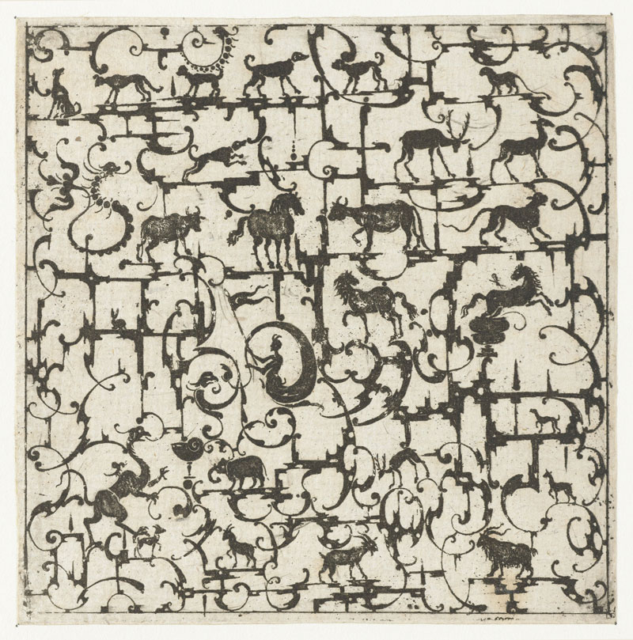
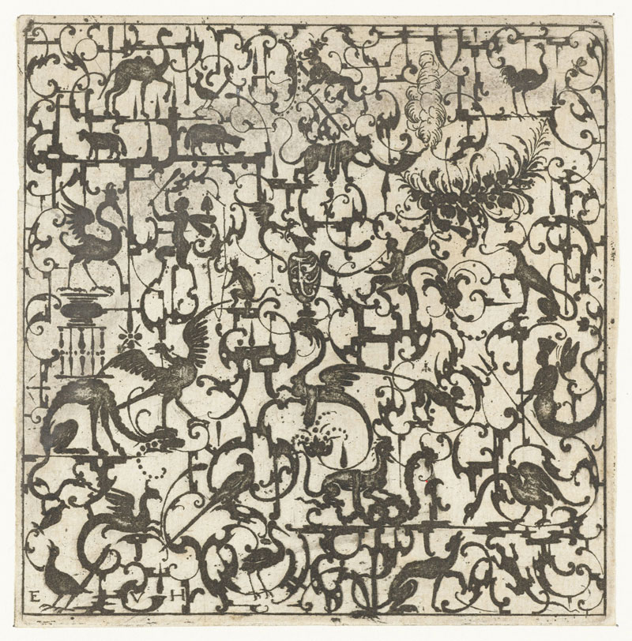
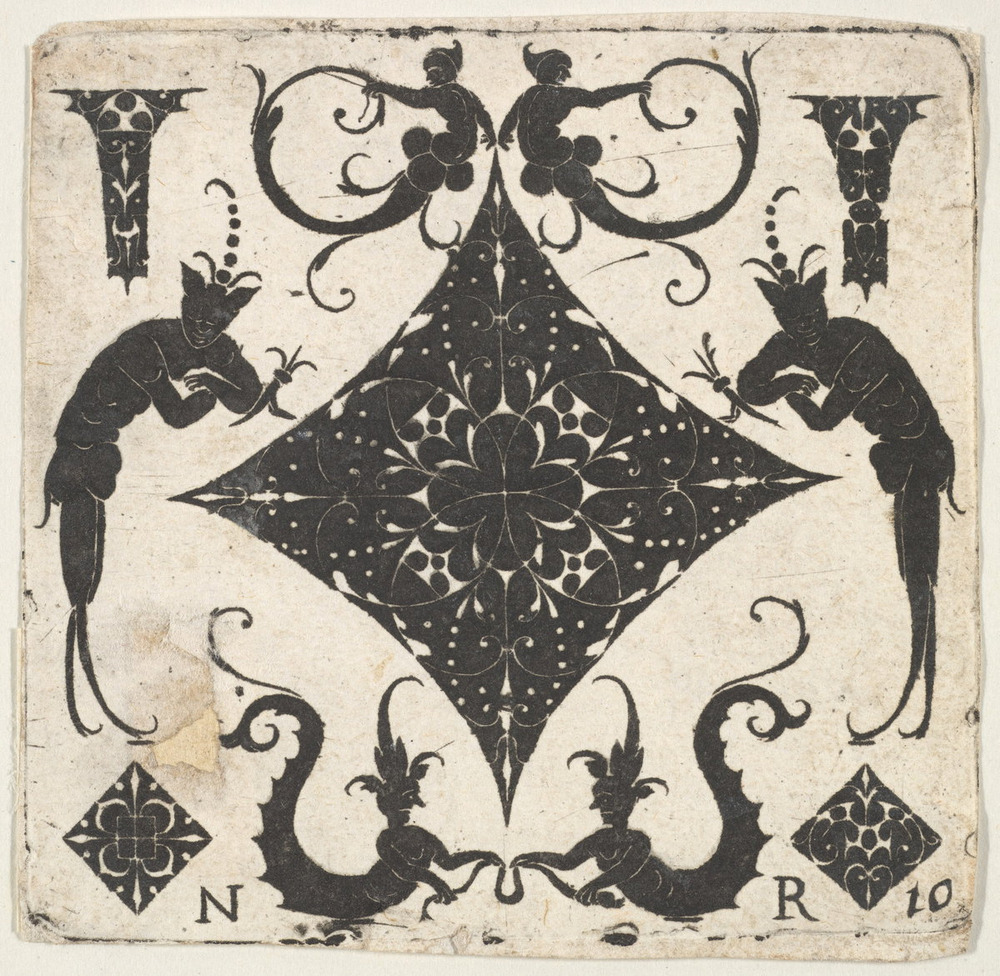
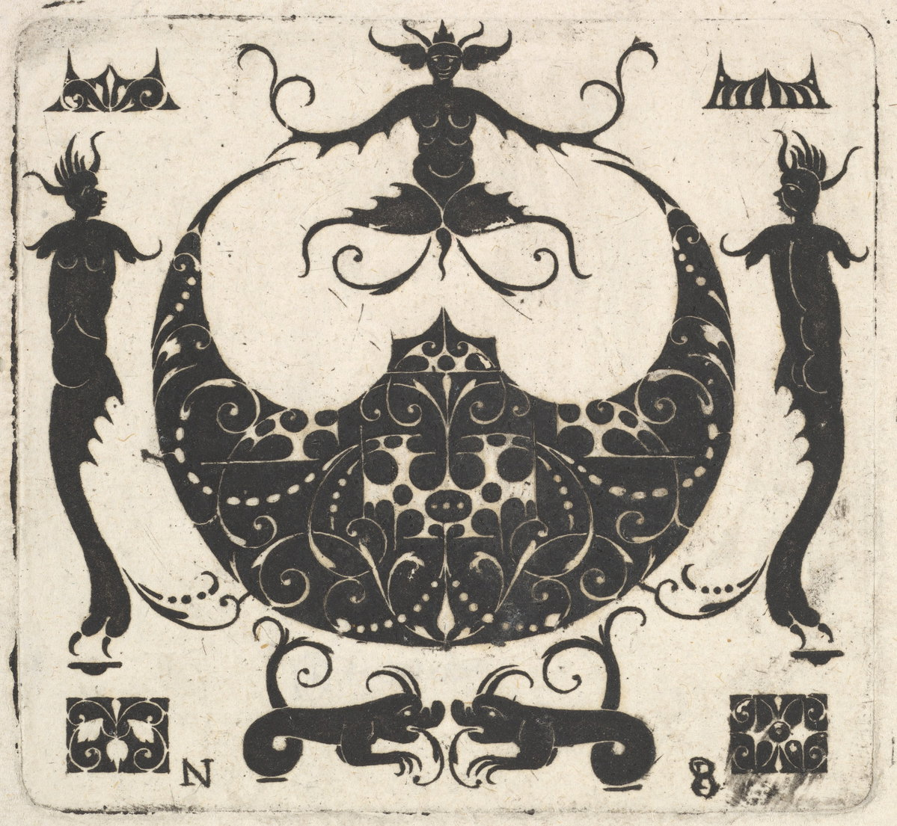
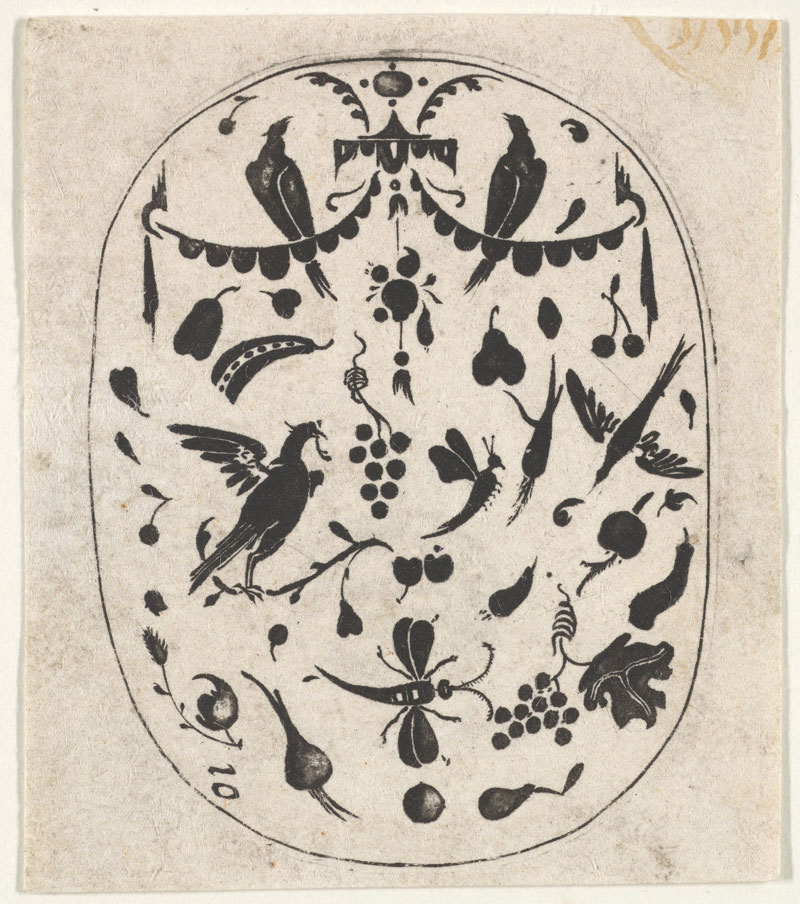
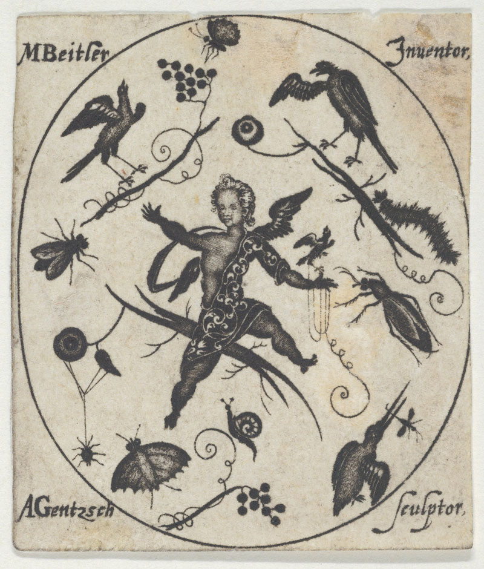
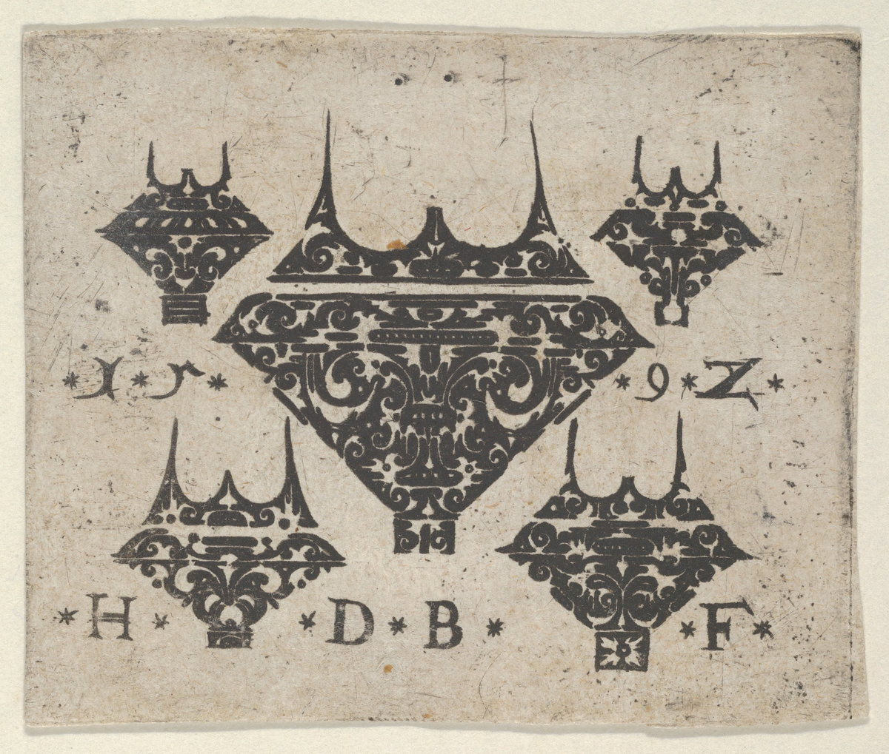
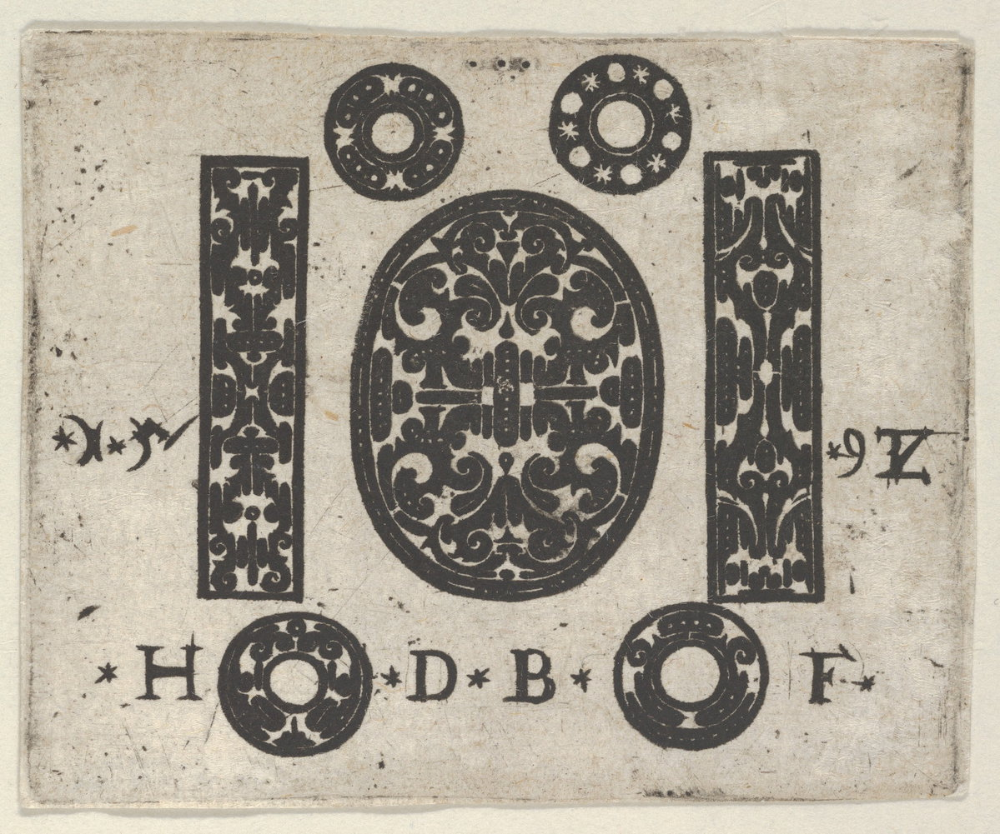
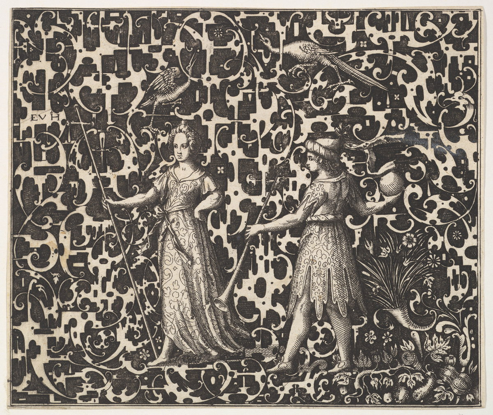
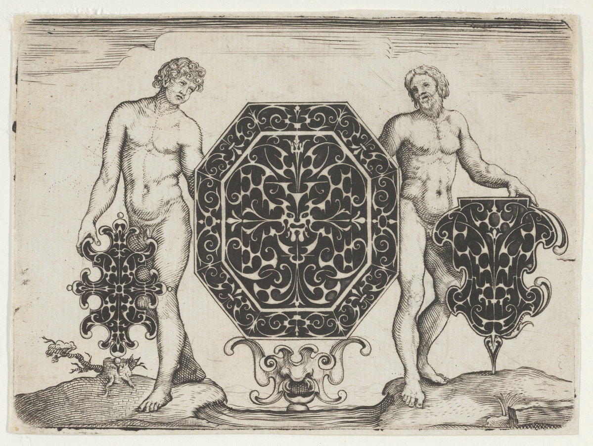
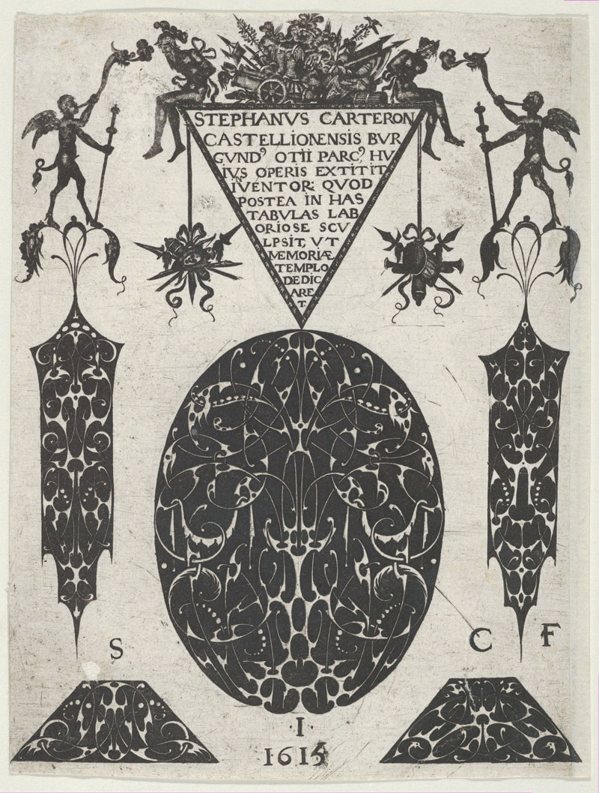
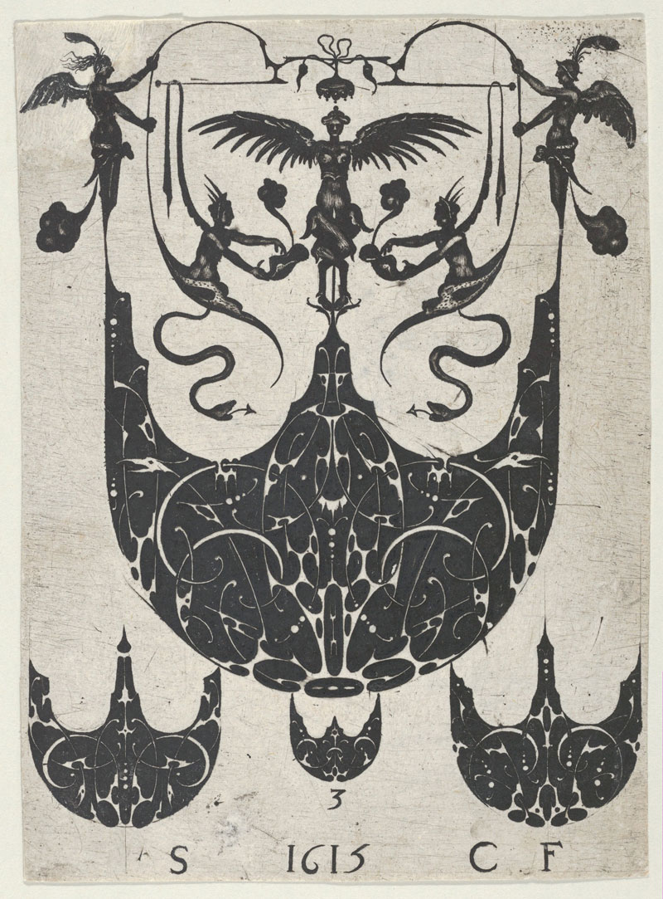
Early modern prints are recycled waste products of everyday life. Paper was fashioned from soiled and tattered linen, which was boiled and beaten into pulp, then strained and dried in sheets. Ink was an admixture of lampblack or soot blended with oil. Rags and grime thus became the material basis for print media, once wrought through the printmaker’s resurrective craft. As printmakers of this period continued to discover, this act of applying ink to paper with a printing matrix and a press could be accomplished via an astonishing multitude of techniques, some quite esoteric.
One unusual technique, called blackwork, resulted from the adaptation of an enameling process known as champlevé. In traditional metalwork, champlevé entails filling shaped voids in a metal object, such as a brooch or box lid, with a powder of colored glass and sometimes, metal. The object is then heated to melt and bind these fillings, and, once cooled, polished until smooth and an image or pattern becomes crisply legible. To create blackwork prints, shaped voids are gouged into a copper printing plate (rather than a piece of jewelry or decorative object) and filled with a concoction of thick ink (rather than colored glass). When pressed onto paper, the inked voids print areas of pure black that contrast with the unprinted paper; the resulting image was often an intricate pattern or lacy ornamental motif. Artists who made these prints frequently combined blackwork with the linear compositional elements of traditional burin engraving.
Blackwork prints often signaled explicitly the technique’s origins in jewelry design. The earliest known print of this kind is a design for a ring and bezel. Insect and flower motifs are common in blackwork prints, as they are in jewelry. Many of these prints present designs for hypothetical objects like pendants, brooches, or earrings. As they imagined these objects that could be, but as yet did not exist, blackwork engravers were determined to make their own works — paper prints — precious and full of visual interest.
In addition to functioning as design proposals, these printed motifs could also manifest more purely as compositional experiments that toyed with the pictorial elements of scale, perspectival space, and contour. As Madeleine Viljoen suggests, the blackwork process itself provided specific content to many of these prints, invoking the air and gusts that produced the soot of printing ink and the creative spiritus of engraving. In one print by Toutin, for instance, a blackwork pendant hovers above a furnace tended to by a goldsmith and an assistant who clutches bellows.
The production of blackwork prints spanned only a few decades, from the mid-1580s through the 1620s. Shifting tastes in fashion and ornament are the commonly understood causes of blackwork’s decline, but that does not explain why these engravers were either unsuccessful or uninterested in adapting blackwork to other types of imagery. Perhaps blackwork was too bound up in increasingly out-of-vogue designs for audiences — and makers — to conceive of the labor-intensive technique as fit for anything else. Nevertheless, for a time, these prints’ creators appropriated both the design principles and craft techniques of jewelry-making for graphic art, and in so doing, created objects of virtuosity and whimsy.